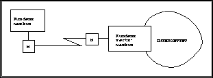

I dette tilfellet er det også to modemer som knytter kunden til Internettet via en telelinje. Men den viktige forskjellen her, er at det ikke går TCP/IP trafikk mellom kunden og tilbyderen, bare fra tilbyderen og videre ut på Internettet.
Denne tilknytningsformen er skissert i figur  .
.
Ved en oppringt vertsmaskintjeneste benytter man samme type modemteknologi som ved SLIP og PPP, og oppnår altså hastigheter opp til ca. 28.8 kbps.
Den store fuksjonelle forskjellen på oppringt vertsmaskin og oppringt TCP/IP, er den at man med oppringt TCP/IP har tilgang til tjenestene direkte på egen PC. Det betyr at man kan ``shoppe'' Internet programmer mer eller mindre fritt og kjøre lokalt på PCen. Ved Internet aksess gjennom oppringt vertsmaskin er man (stort sett) henvist kun til det tilbudet denne tilbyderen har tilrettelagt på vertsmaskinen. Til gjengjeld kommer man til dekket bord, og slipper problematikk rundt drift av TCP/IP tjenestene lokalt på PCen.
